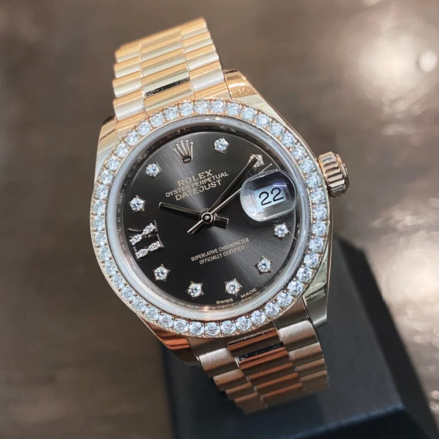
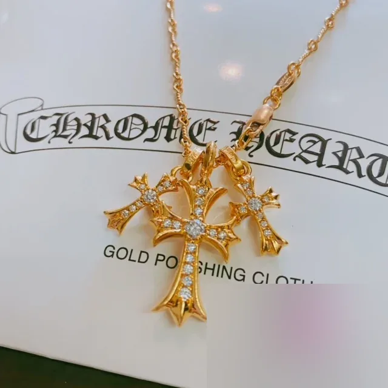

当社がいま買取を強化しているアイテム
当社の2店舗（〇〇〇〇A 心斎橋店、〇〇〇〇B）では、ブランドバッグや財布、時計、ジュエリーのほか、下記の品目の買取に特に力を入れています。いずれも査定料・手数料は無料で、査定のみのご来店も歓迎しています。
- ロレックス（動かない・付属品がないものも含む）
- 壊れたブランド時計（ガラス割れ、ベルト切れ、パーツ欠損など）
- 金・インゴット（インゴットの分割サービスにも対応）
- クロムハーツなどのシルバーアクセサリー
- シャンパンなどのお酒
品目ごとの詳しい内容は後半でご紹介します。まずは、過去に当店で買い取った実績値を参考としてご覧ください。
買取実績値一覧（実績時点：2020年9月／〇〇〇〇A 心斎橋店）
実績値の見方について
実績時点：2020年9月（〇〇〇〇A 心斎橋店）。現在の買取額を保証するものではなく、相場・状態・付属品で変動します。最新の目安は相場トラッカー、またはLINE査定・お電話でご確認ください。
以下は、〇〇〇〇A 心斎橋店が2020年9月時点で公開していた買取実績値です。当時の相場と、個々のお品物の状態・付属品を前提とした金額のため、同じモデルでも現在の査定額は大きく異なる場合があります。

バッグ（実績時点：2020年9月）
| ブランド | モデル・仕様 | 買取実績値 |
|---|---|---|
| プラダ | サフィアーノ エスプラナードバッグ 1BA046 | 100,000円 |
| フェンディ | ピーカブー レザー 8BN226 | 150,000円 |
| セリーヌ | ラゲージ ナノショッパー ホワイト | 120,000円 |
| ディオール | レディ ディオール カナージュ レザー ピンク | 160,000円 |
| ミュウミュウ | マテラッセ ナッパクリスタル ピンク | 60,000円 |
| ロエベ | アマソナ36 クラシックカーフ | 100,000円 |
| フェラガモ | ガンチーニ レザー ベージュ | 60,000円 |
| ゴヤール | サンルイGM グレー | 120,000円 |
| グッチ | マーモント レザー 421890 | 100,000円 |
| ボッテガ・ヴェネタ | イントレチャート チェーンショルダーバッグ | 80,000円 |
| バレンシアガ | メタリックエッジ ミニシティ レザー | 65,000円 |
| クロエ | ドリュー スエード×レザー | 60,000円 |
| ジミー チュウ | スタースタッズ レザー トートバッグ | 50,000円 |
| ジバンシー | ナイチンゲール レザー | 50,000円 |
| MCM | スタッズ リュック コニャック | 35,000円 |
| コーチ | リュックサック カモフラージュ | 20,000円 |
ウォレット（実績時点：2020年9月）
| ブランド | モデル・仕様 | 買取実績値 |
|---|---|---|
| プラダ | サフィアーノ リボン ラウンドファスナー長財布 | 35,000円 |
| フェンディ | モンスター ラウンドジップ長財布 黒 8M0299 | 40,000円 |
| セリーヌ | バイカラー ラウンドファスナー長財布 | 35,000円 |
| ディオール | レディ ディオール エナメル ラウンドファスナー | 30,000円 |
| ミュウミュウ | マテラッセ ラウンドジップ長財布 | 25,000円 |
| ロエベ | パズル ラウンドファスナー長財布 | 35,000円 |
| フェラガモ | ヴァラリボン ラウンドジップ長財布 ピンク | 30,000円 |
| ゴヤール | ジップGM ラウンドファスナー長財布 | 80,000円 |
| グッチ | GGマーモント マトラッセレザー ラウンドジップ長財布 | 45,000円 |
| ボッテガ・ヴェネタ | イントレチャート ラウンドファスナー長財布 青 | 40,000円 |
| バレンシアガ | ラウンドファスナー長財布 黒 | 25,000円 |
| クロエ | ボビー 二つ折り長財布 | 25,000円 |
| ジミー チュウ | スタースタッズ ラウンドファスナー長財布 | 45,000円 |
| ジバンシー | パンドラ スター ラウンドファスナー長財布 | 30,000円 |
| MCM | ダイアモンドビセトス スワロフスキー レザー長財布 | 25,000円 |
| コーチ | ラウンドファスナー長財布 ネイビー | 10,000円 |
ウォッチ（実績時点：2020年9月）
| ブランド | モデル・仕様 | 買取実績値 |
|---|---|---|
| ジェイコブ | グランド JC-GR5-35 | 500,000円 |
| ガガミラノ | ナポレオーネ | 30,000円 |
| ウブロ | ビッグ・バン 301.PB.131.RX | 1,400,000円 |
| パネライ | ルミノール クロノ デイライト | 450,000円 |
| ロジェ・デュブイ | エクスカリバー RG | 1,300,000円 |
| オーデマ ピゲ | ロイヤル オーク オフショア クロノ | 1,300,000円 |
| フランク ミュラー | コンキスタドール グランプリ | 350,000円 |
| オメガ | シーマスター プラネットオーシャン クロノ | 400,000円 |
ジュエリー（実績時点：2020年9月）
| ブランド | モデル・仕様 | 買取実績値 |
|---|---|---|
| ハリー・ウィンストン | エタニティリング 幅2mm | 250,000円 |
| ティファニー | バイ ザ ヤード ネックレス ダイヤ0.12ct | 45,000円 |
| フレッド | フォース10 ブルー | 85,000円 |
| ブシュロン | キャトル スモール | 100,000円 |
| ヴァン クリーフ＆アーペル | ヴィンテージ アルハンブラ ネックレス 白蝶貝 | 200,000円 |
| ブルガリ | B.zero1 ネックレス PG | 180,000円 |
| ダミアーニ | ミステリークロス ブラックダイヤ | 80,000円 |
| ピアジェ | ライムライト ハート ダイヤネックレス | 400,000円 |
エルメス、シャネル、ルイ・ヴィトン、ロレックス、カルティエの主要モデルは、当社の買取実績をもとにした相場トラッカーで、期間・状態・付属品の区分とあわせて掲載しています。
ロレックス：動かないもの・付属品がないものもご相談ください
ロレックスは当社で特に買取を強化しているブランドです。デイトナ、サブマリーナー、エクスプローラー、GMTマスターII、シードゥエラーなど、スポーツモデルを中心に中古市場での需要が続いています。ロレックスに詳しい鑑定士が、モデル・年式・状態・付属品を確認して査定します。
一方で、ロレックスの買取相場は月ごとに変動し、人気モデルでも1か月で大きく下がることがあります。ご売却のタイミングで迷われている場合は、直近の相場の動きも含めてご説明しますので、お気軽にお問い合わせください。
- サブマリーナーは、デイト付きのモデルとデイトなしのモデルで評価が異なります。
- シードゥエラーはサブマリーナーと外観が似ているため、お持ちのモデルが分からない場合はそのままお持ちください。
- 壊れて止まっているロレックスも買取の対象です（次の項目をご覧ください）。
モデル別の相場はデイトナ 126500LN、サブマリーナー 126610LNの相場ページ、ブランド全体の査定ポイントはロレックスの買取ガイドでご確認いただけます。
腕時計の査定は当店へ（電話・LINEで無料相談）
どちらの店舗でも査定・ご相談を承ります。2店舗の違いと選び方
壊れたブランド時計：処分する前にお持ちください
「動かない」「ガラスが割れている」「ベルトが切れた」「リューズ（竜頭）がない」といった状態のブランド時計も、〇〇〇〇A 心斎橋店では買取を強化しています。オーバーホール費用が高くて放置している時計や、他店で買取を断られた時計もご相談ください。
- 故障して動かない、ガラスに傷・割れがある
- 文字盤に日焼けがある、20年以上前の古いデザイン
- ベルトがない、リューズなどのパーツが欠けている
- 箱・保証書・パーツなどの付属品がない
- パーツのみ、ブレスレットのコマのみ
ロレックス、オメガ、シャネルなどの時計は、状態にかかわらず査定の対象です。まれに、年式や仕様によって思わぬ評価になるものもあります。無理に動かしたり、ご自身で分解したりせず、そのままの状態でお持ちください。

壊れた時計の査定は当店へ（電話・LINEで無料相談）
どちらの店舗でも査定・ご相談を承ります。2店舗の違いと選び方
金・インゴット：分割サービスにも対応しています
金・プラチナは、K24からK10までの金、PT1000からPT850までのプラチナなど、純度や形状を問わず買取しています。片方だけのピアス、壊れた指輪、時計のベルトのコマ、記念メダル、金貨・プラチナコイン、インゴットも対象です。
〇〇〇〇A 心斎橋店では、金インゴットをご希望のサイズに小分けにする「インゴット分割サービス」も行っています。「一部だけ売りたい」「相続で分けたい」「保管しやすくしたい」といったご相談にお応えします。
| 項目 | 内容 |
|---|---|
| 分割手数料 | 1gあたり300円から（分割加工手数料以外の手数料はかかりません） |
| 分割後のサイズ | 50gから |
| 分割後にそのまま売却する場合 | 分割手数料は実質0円 |
| 加工のみのご依頼 | 対応 |
| 加工日数 | 【要確認】 |
税金について
金地金を売却した際の所得や、贈与・相続にかかる税金の扱いは、お客様の状況によって異なります。具体的な税額や控除の適用については、税理士または税務署にご確認ください。
金・プラチナの査定ポイントは金・プラチナの買取ガイドをご覧ください。
金・プラチナの査定は当店へ（電話・LINEで無料相談）
どちらの店舗でも査定・ご相談を承ります。2店舗の違いと選び方
クロムハーツなどのシルバーアクセサリー
〇〇〇〇Bは、クロムハーツ、ロンワンズ、ローリーロドキン、ジャスティンデイビス、ガボールなどのシルバーブランドの買取を得意としています。傷や汚れがあるもの、保証書・付属品がないものも買取の対象です。
〇〇〇〇Bでは、シルバーアクセサリーのカスタマイズ（アフター加工）も承っており、ブランドやモチーフの需要に詳しいスタッフが査定を担当します。シルバーの黒ずみは、ご自身で磨かずにそのままお持ちいただくことをおすすめしています。査定のポイントはシルバーアクセサリーの買取ガイドで詳しくご紹介しています。

シルバーアクセの査定は当店へ（電話・LINEで無料相談）
どちらの店舗でも査定・ご相談を承ります。2店舗の違いと選び方
シャンパンなどのお酒
〇〇〇〇Bでは、お酒の買取も行っています。ご自宅に眠っているシャンパンなどのお酒があれば、ブランド品とあわせてご相談ください。〇〇〇〇A 心斎橋店でも、アルマン・ド・ブリニャック（通称アルマンド）ロゼなどを対象にした期間限定の買取キャンペーンを実施したことがあります。
お酒は、未開栓であること、ラベルやキャップの状態、箱などの付属品、保管状態が査定に影響します。直射日光の当たらない涼しい場所で保管し、箱がある場合は一緒にお持ちください。
お酒の買取条件について
買取対象の銘柄・状態（未開栓に限るか等）、〇〇〇〇A 心斎橋店での常時受付の有無、宅配買取での受付可否は【要確認】です。また、お酒の買取・販売に必要な酒類販売業免許の内容と表示も【要確認】です。
深夜の持ち込みの査定は当店へ（電話・LINEで無料相談）
どちらの店舗でも査定・ご相談を承ります。2店舗の違いと選び方
少しでも高く売るためのコツ
査定額は、お品物の人気・状態・当日の相場で決まります。お客様ご自身でできる準備は多くありませんが、次の点を意識していただくと、評価が上がったり、査定がスムーズになったりします。
- 付属品をそろえる箱、保証書（ギャランティカード）、鑑定書・鑑別書、保存袋、時計のコマなどがあればお持ちください。なくても買取は可能ですが、あればプラス査定になります。
- 軽く汚れを落とすほこりや汚れを柔らかい布で軽く拭く程度で十分です。シルバーの黒ずみやバッグのシミを無理に落とそうとすると、かえって傷めることがあるため、そのままお持ちください。
- まとめてお持ちいただくバッグ、財布、時計、ジュエリーなど、複数のお品物をまとめてご相談いただくと、一度で査定が済みます。1点からでも買取しています。
- 分かる範囲で情報を伝えるブランド名、型番、購入時期などをお伝えいただくと、査定が正確かつスピーディーになります。
- 相場が動くタイミングに注意する時計や金は相場の変動が大きい品目です。売却を迷っている場合は、LINE査定やお電話で現在の目安を先に確認するのがおすすめです。
売却の基本的な流れや必要書類は買取方法（店頭・宅配・LINE査定）とブランド品の売り方ガイドでご案内しています。
よくある質問
掲載されている買取実績値で買い取ってもらえますか？
いいえ。掲載している金額は、〇〇〇〇A 心斎橋店の2020年9月時点の実績値です。現在の買取額を保証するものではなく、相場・状態・付属品によって変動します。現在の目安はLINE査定やお電話でお問い合わせください。
壊れている時計や、付属品がないものも買取できますか？
はい、買取の対象です。動かない、ガラスが割れている、ベルトやリューズがない、保証書がないといった状態でも査定します。無理に修理や分解をせず、そのままお持ちください。
強化アイテム以外のブランド品も買い取ってもらえますか？
はい。ブランドバッグ、財布、アパレル、宝石・色石、金券など、幅広い品目を取り扱っています。ノーブランドの品物でも、需要があるものや宝石そのものに価値があるものは買取の対象です。1点からお気軽にご相談ください。